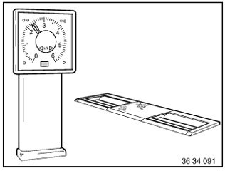

Component Tests and General Diagnostics
34 00 009 Checking brakes on test standNecessary preliminary tasks:
^ Check tires for damage
^ Check tire treads
^ Checking tire inflation pressure

Important!
The corresponding system must be deactivated on vehicles equipped with ASC+T or DSC.
The ASC+T or DSC telltale and warning light must light up in the instrument cluster!
The brakes must be at normal operating temperature. To do so, gently warm up the brake disks and brake drums while dry by braking the vehicle several times.
Important!
Only brake test stands with test speeds of 2.5-6 km/h may be used.
Max. bedding-in time 2 minutes.
You must follow without fail the guidelines contained in the operating instructions of the relevant test stand manufacturer.
Failure to do so may result in damage to the vehicle and the system and also personal injury.